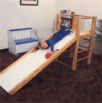
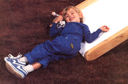
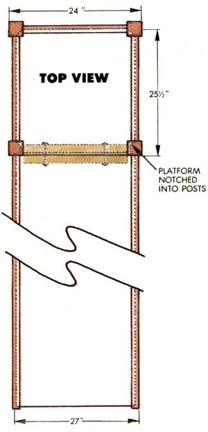
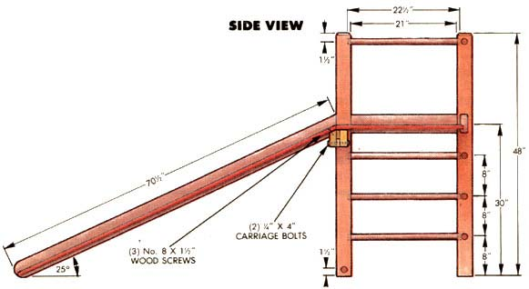

Mother's Indoor Climber
Step-by-step guide to building this inside playground for children, including materials list, diagrams.
November/December 1986
Are you looking for a way to keep your brood at bay this winter?
W inter days of indoor confinement can be hard on toddlers and parents alike. When it's too cold and wet to play outside, antsy youngsters are all too prone to make kitchen cupboards their playground.
We won't promise that our climber will return winter peace and tranquility to a .household with several young children, but we can tell you that it's given more than one tot in MOTHER's extended family hours of happy, muscle-stretching play. Our staff members have built several versions. The first made its debut on Christmas morning a couple of years ago, thrilling a busy 1/2 year old.
Since then, the details of the design have been improved (and will probably evolve further), but the basic dimensions still hold. Through trial and error, we've found that the spacing of the rungs and rails, and the angle of the slide, suit the reach and physical capabilities of 11/2- to 3-year-old children very well.
Step-by-Step
1. Dado a 3/4" X 3/16' groove in one face of the 8' 2 X 4 and in one face of one 12' 2 X 4, each groove exactly 3/4" from an edge.
2. Round over all edges on these boards with a 1/4" or 3/8" rounding-over bit in a router. If you use a 1/2" bit on the edge farthest from the dado on the 8' piece-which will become the three tower rails-little fingers will have an easier time getting a grip.
3. Cut eight 48" lengths from the remaining 2 X 4s. Glue pairs together face to face, and clamp them.
4. Bisect the 5/8" plywood and the Masonite lengthwise. Use a metal-cutting blade to get a smooth edge on the Masonite.
5. Cut a 25 1/2" piece from both the plywood and the Masonite. Then cut a 25° bevel across the end of the 70 1/2" length of plywood that you just sawed, removing 1" from the "C" side and a little more from the other. Remove 1 " from the Masonite with a square cut.
6. Trim the corners of the 24" X 25 1/2" plywood and Masonite, as shown in the illustration, to form the tower floor. Glue the sheets together with the Masonite on top and the plywood's good side down, and clamp them until the glue sets.
7. Cut two 21 " pieces of 2 X 4 from a 2 X 4 X 12' board, and bevel the long edge of one at 25°.
8. Cut two 21" pieces from the 1 X 2. Glue and nail one to the unbeveled 2 X 4 X 21" and the other to the beveled piece, as shown. Clamp (don't glue) the two assemblies together temporarily, and drill 5/16" holes through them, 4" from each end, to accept the 4" carriage bolts.
9. Glue and screw the beveled face of the 2 X 4 to the "B" side of the plywood, so that it's centered (1 1/2" in from each edge) and matches the beveled edge on the sheet.
10. Glue the 69 1/2" piece of Masonite to the "C" side of the corresponding piece of plywood, and clamp.
11. Remove the clamps from the face-glued 2 X 4s, and rip off 1/4" on each side where the joint is exposed, to form 3" X 3" posts. Make a light cut on each end to square them. Round over all edges with the router.
12. Drill 1 1/4" holes 3/4" deep in the posts for the 1 3/8" closet rod, at the positions noted on the illustration. (Check your layout twice before proceeding; this is an easy place to become confused.)
13. Drill 1/4" holes all the way through the posts at the positions corresponding with those noted on the tower rail illustration. These holes are staggered so they won't intersect inside the two posts.
14. Drill 1/4 " holes 1 1/2" deep in the ends of the three 2 X 4 tower rails, as shown in the illustration. Note that the holes in the tower rail opposite from the slide are in different locations from those in the others.
15. Drill two 1/4" X 1 1/2" holes in each end of the slide support rail, 1" from the top and the bottom.
16. Fashion V-blocks or some other means of holding the posts on edge while dadoing. Set the dado so that it makes a 3/4"-wide X 1 9/16"-deep cut into the inside corner of each post, at the position noted on the illustration. Again, check twice to be sure you're cutting the right posts in the right place. Then set the dado for 3/4" X 13/16", and notch the full inside of the two posts adjacent to the slide. (See top view.)
17. Assemble the left and right sides of the tower separately, gluing the closet rod into the holes and setting the side rails by driving pieces of dowel through the posts and into the ends of the rails. Clamp until the glue sets. With a wet rag, wipe off any glue that leaks out.
18. Set one end of the slide-support rail into one of the sides with the 1/4" dowels.
19. Lay that side of the tower flat on the floor, and set the closet rods into it.
20. Apply glue to the exposed ends of the closet rods, set the tower floor into the side lying on the floor (no glue is needed), and lower the other side onto this assembly. Clamp until the glue sets.
21. Crosscut the 2 X 4 X 12' at a 25° bevel to form a slide rail 70 1/2" long. Cut the other 70 1/2" 2 X 4 at the same angle, but make sure that the opposite face is up. (One should be cut with the dado up and the other with the dado down.) Round the other ends of both boards.
22. Apply glue to the dados in both slide rails and slip them onto the slide, making sure the bevels match. Clamp until the glue sets.
23. Trim the ends of any exposed 1/4" dowel with a sharp chisel or a saw with no set. Sand off any glue leaks, stain with Minwax Fruitwood or an equivalent coloring, and finish with your favorite formulation.
Tower Rail Detail
Top View
Side View
The version we're showing here is our economy model-not the cheapest possible but one that ac cents durability over exotic materials. The first climber we built was framed in clear fir coated with tung oil, and the slide was birch plywood slickened with bowling alley wax. It was truly attractive . . . until its proud new owner decorated it with an indelible marker.
We used 5/8" plywood on the climber shown, because it's only a couple of dollars more than 1/2", and it yields a convenient 3/4" thickness when combined with 1/8 " Masonite. Likewise, the 1 3/8" closet rod isn't necessary for strength; it's just less costly than dowel. The 2 X 4s are framing lumber, but it would have been nice to have something a little better when the time came to rout the edges. Knots and rounding-over bits don't mix well.
LIST OF MATERIALS:
(1) 2X4X8'
(4) 2X4X12'
(1) 1X2X4'
(1) V" X 4' X 8' B-C Plywood
(1) 4s" X 4' X 8' Tempered Masonite
(2) IV' X 8' Closet Rod
(1) 1's" X 10' Closet Rod
(1) 1/4" X 3' Dowel
(3) No. 10 X 1'/2" Wood Screws
(2)'b" X 4" Carriage Bolts and Wing Nuts
|
 |
 |
 |
|
 |
 |
|